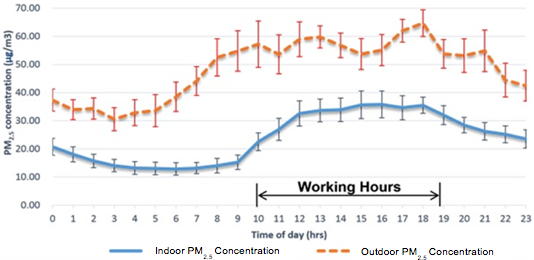
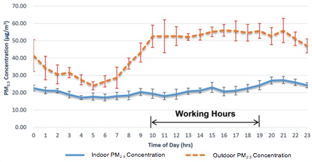

Open/Closed Doors and Air Quality in the Retail Space: Overview of a Study by Imperial College and Kings College London
Independent research was carried out on Regent Street in London to investigate how levels of internal air pollution in shops are affected by closing the door. The study showed that a one third drop in PM2.5 and black carbon particulates in the retail space could be achieved by closing the door during working hours. NO2 was similarly reduced. Closing the door therefore has a significant effect on reducing exposure of customers and staff to the serious health risks associated with high levels of outside air pollution.
Introduction
During London's ‘Great Smog’ of Dec 1952, the deaths of 4,000 people were attributed to air pollution(1). This led to the Clean Air Act 1956, and so such ‘pea souper’ smogs are now no longer a problem. Today, however, invisible pollution has replaced the smog of the past, driven in part by the popularity of diesel vehicles. As a consequence, every year in London a significant number of deaths are still attributed to air pollution, with the figure in 2008 being approximately 4,300(2).
We can't see, smell or taste these tiny particulates. They are so small that they are not only invisible, but can also pass though the lung lining into the bloodstream, from where they are carried to the organs. Among other health effects, previous studies have linked air pollution to heart attacks, cardiovascular and respiratory disease, lung cancer and asthma exacerbation(3,4). Not surprisingly those working or driving on, or close to busy streets are worst affected.
While the issues of traffic emissions are resolved, which will take some years, it is important to find ways to mitigate the current health risks. Dr Ben Barratt of King's College London already advises that people living on busy roads can cut their exposure by opening windows only at the back of their homes, away from the road. It follows that people working in shops with the door open to streets, where air pollution levels are high, may be protected if the door is closed. The objective of this study was to investigate this, in order to provide rational advice to retailers operating in areas of high air pollution.
Aim
The aim was to assess the impact of an open/closed door on air quality in shops in locations of high air pollution.
Location and participants
The location of the study was on the east side of Regent Street, London adjacent to Piccadilly Circus. The project took place over a six week period (5/06/2014 to 8/07/2014). The following shops participated:
- The Wolford Shop, 3, 56 Regent Street
- Nespresso, 54 Regent Street
- Austin Reed/Viyella Flagship store 100 Regent Street
- Charles Tyrwhitt 90 Regent Street
The study was performed with the assistance of:
- New West End Company
- The Regent Street Association
Method
Regent Street was chosen as a flagship retail area with notoriously high levels of outdoor air pollution. Most of this air pollution originates from the emissions of slow moving traffic (mainly diesel), including a large number of buses and taxis.
Air pollution levels were investigated inside four shops with different door policies, and also on the street outside. The levels of three important measures of air pollution were investigated. These were the atmospheric concentrations of:
- PM2.5 (particulates measuring 10 or less)
- Black carbon (a component of PM2.5 - essentially soot)
- Nitrogen dioxide (NO2)
Measurements were taken at regular intervals over a number of daily cycles.
Results
The results indicated that the concentration of pollutants inside the shops dropped when a closed door policy was implemented.
Figure 1 shows the PM2.5 concentrations inside and outside Wolford shop throughout a typical daily cycle, with an open door policy implemented during working hours.

Figure 1: Hourly mean value of PM2.5 concentration vs. time of day (data for Wolford, open door policy)
Figure 2 shows similar data for the same shop, however with a closed door policy.

Figure 2: Hourly mean value of PM2.5 concentration vs. time of day (data for Wolford, closed door policy)
Figure 1 indicates that the PM2.5 concentrations within the shop were approximately 60% of those on the street during working hours, when the shop door was left open. Figure 2 indicates that, with the implementation of a closed door policy, this value was reduced to approximately 45%. This indicates that indoor PM2.5 levels can be significantly reduced through the implementation of a closed door policy.
The results also indicated that a similar reduction in indoor black carbon levels could be achieved by closing the door, and that a closed door policy also reduces interior NO2 levels (by 17% measured over 24 hours/ a one third reduction in trading hours).
Conclusions
It is clear that people shopping and working in shops with the door open to streets where the air pollution level is high can be protected if the door is closed. It is an easy and useful short term measure to put into place immediately, until the vast and complicated problem of improving urban air quality is resolved.
The project findings lend weight to persuasive advice to retailers to implement a closed door policy in shops on busy streets, and other locations where air pollution levels are high, to significantly reduce the serious short and long term health risks of exposure. This affects everyone using the retail/restaurant space, but is most significant for staff obliged to spend their working hours in it.
(1) Livingston, K. (2002), 50 years on The struggle for air quality in London since the great smog of December 1952, Greater London Authority, London, p1
(2) Miller, B. (2010), Report on estimation of mortality impacts of particulate air pollution in London, IOM Consulting Report, Edinburgh, p7
(3) Ostro, B. (2003), Outdoor Air Pollution, Environmental Burdon of Disease Series, No.5, World Health Organisation, Geneva, p5
(4) COMEAP (2010) Committee on the Medical Effects of Air Pollution p1